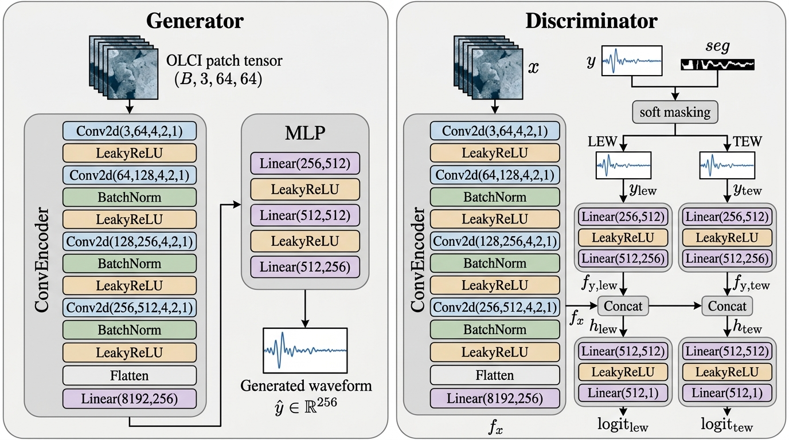
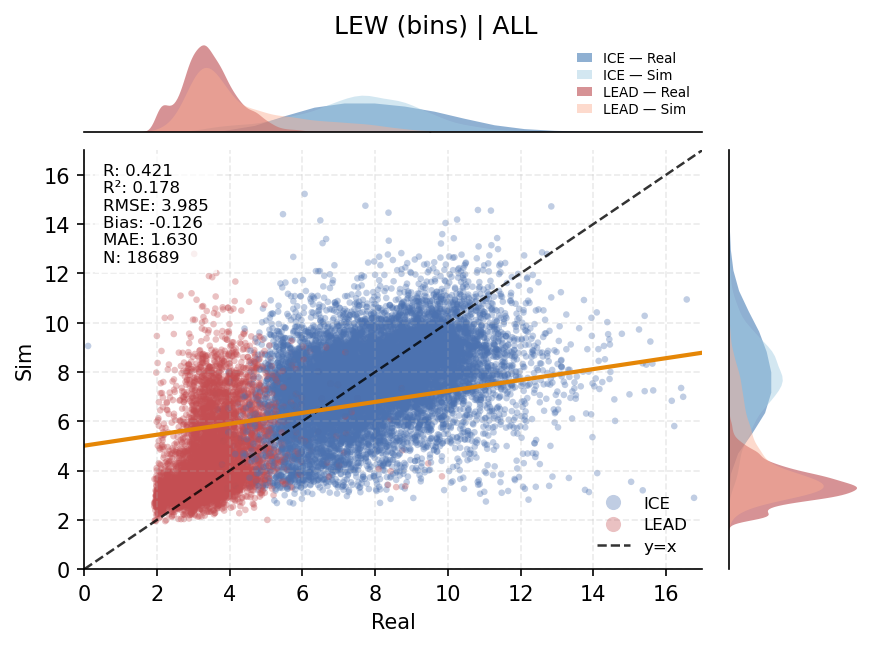
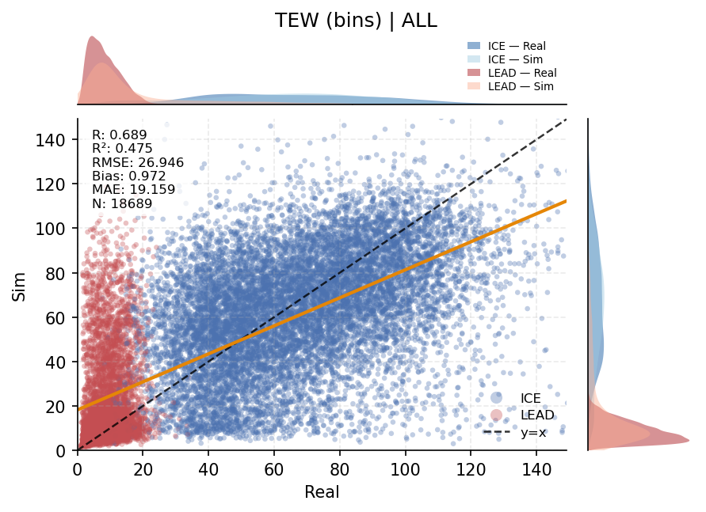
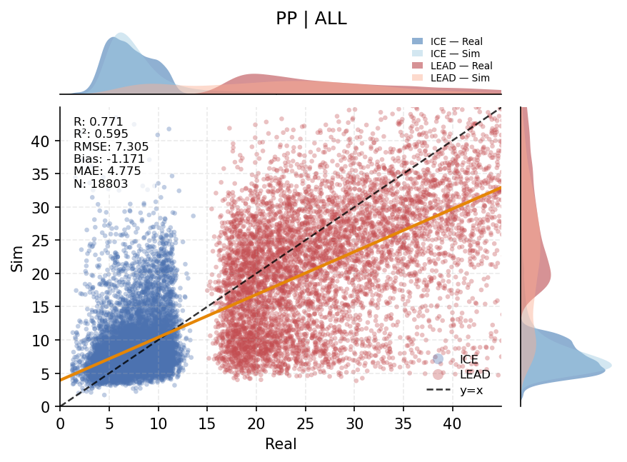
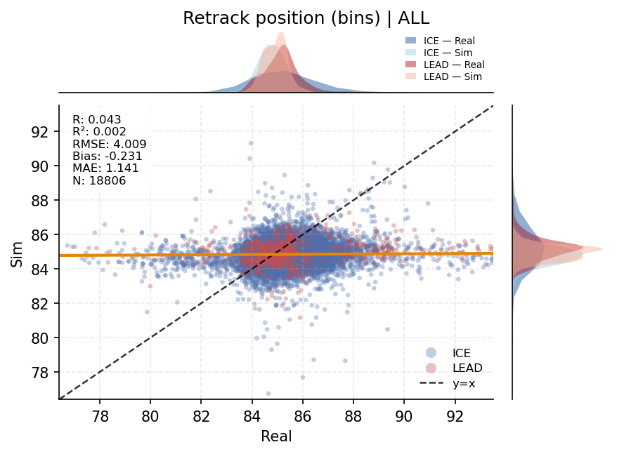
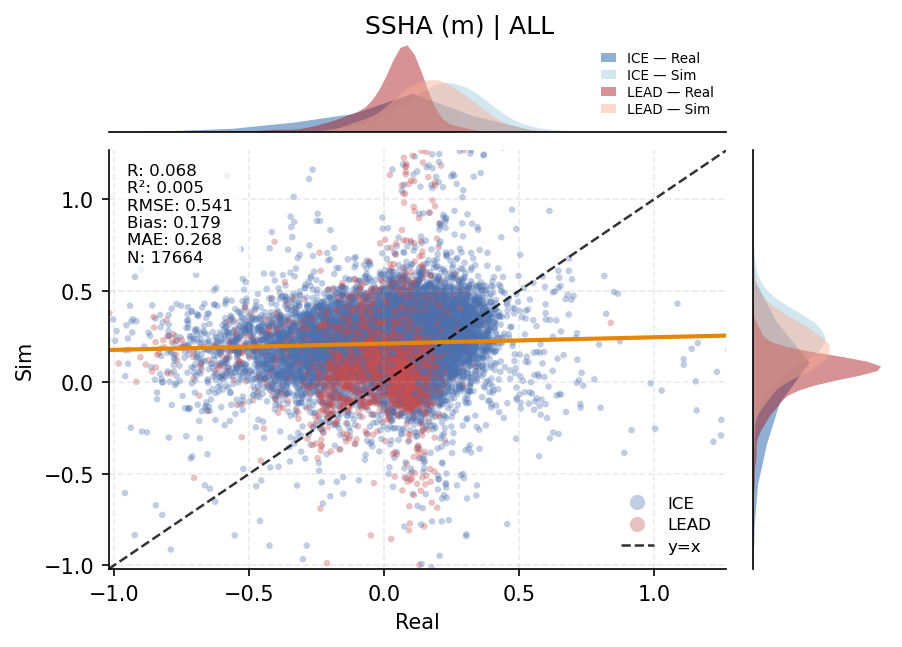
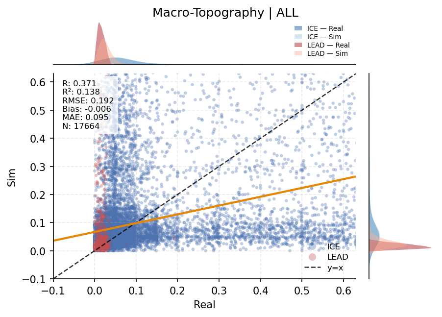
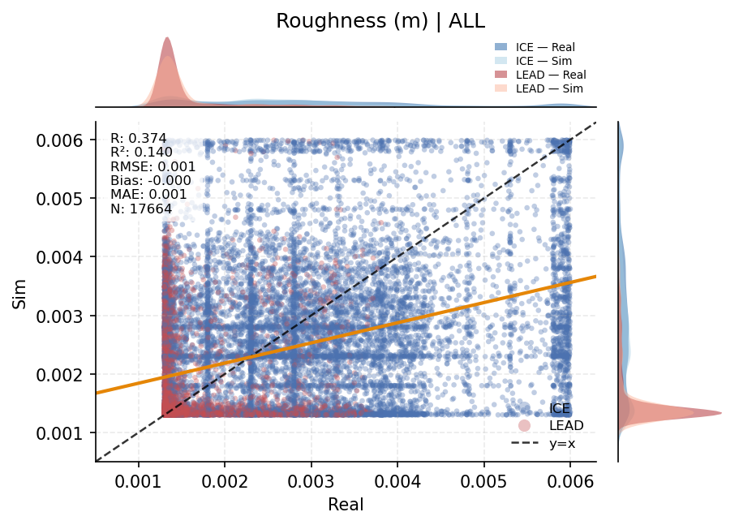
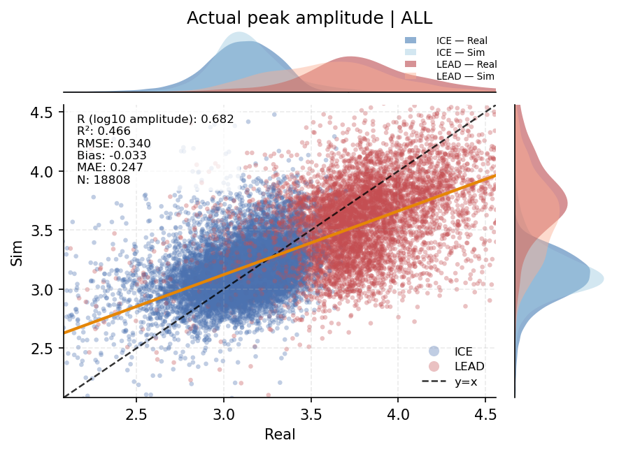

Representative Results
Image-to-waveform generation
Representative comparison of sea-ice image patches and generated SAR altimetry waveforms across baseline and proposed models.

Research
Sea-ice radar echoes are difficult to interpret because snow, roughness, open-water leads, and mixed surface types can all change the returned waveform within one satellite footprint. This project treats waveform formation as a cross-modal generation problem: from co-located Sentinel-3 OLCI optical image patches, a conditional generative model learns to produce the corresponding SRAL radar-altimetry waveforms. I evaluate the generated echoes by waveform accuracy, morphological descriptors, and retracking-based physical consistency, showing how multimodal deep learning can link visible sea-ice structure with radar-altimetry response for waveform interpretation and sea-ice retrieval. A key design is to encode the waveform in physically meaningful segments rather than as a single undifferentiated curve. This helps the model focus on the leading edge, trailing edge, peak structure, and retracker-relevant regions that carry most of the geophysical information.
Representative Results
Representative comparison of sea-ice image patches and generated SAR altimetry waveforms across baseline and proposed models.
Model Architecture
A conditional generator maps co-located optical image patches into SAR altimetry waveforms, while region-aware discriminators provide targeted supervision over the physically informative echo segments.

Waveform Metrics
Generated and observed echoes are compared through retracker-relevant waveform descriptors across sea-ice and lead samples.




Geophysical Retrieval
Generated waveforms are evaluated through downstream retracking to test whether their derived surface properties remain physically consistent.




Demo
A compact animation demonstrates how generated waveform products vary along the Sentinel-3 track.